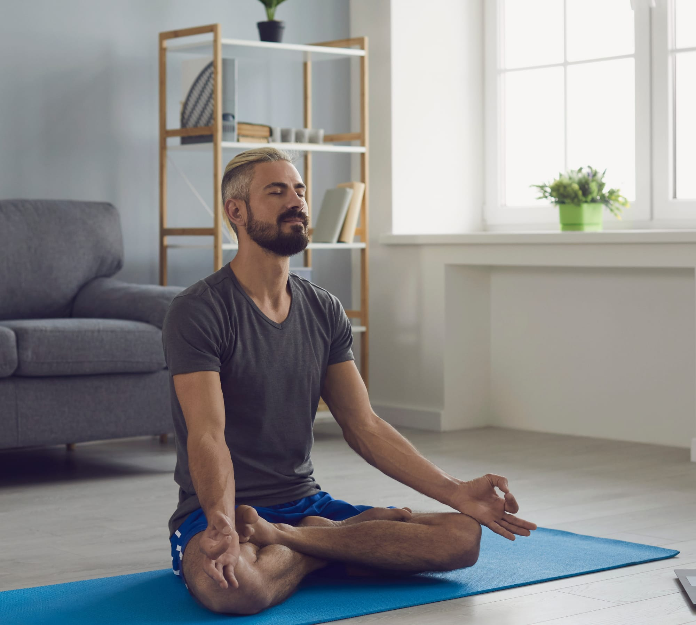
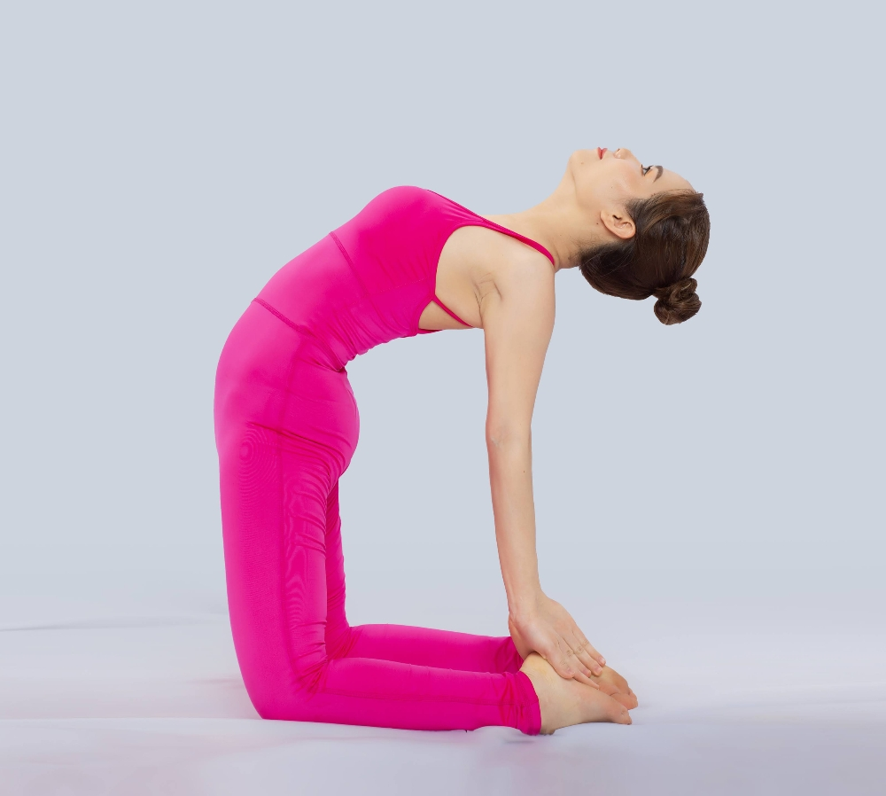
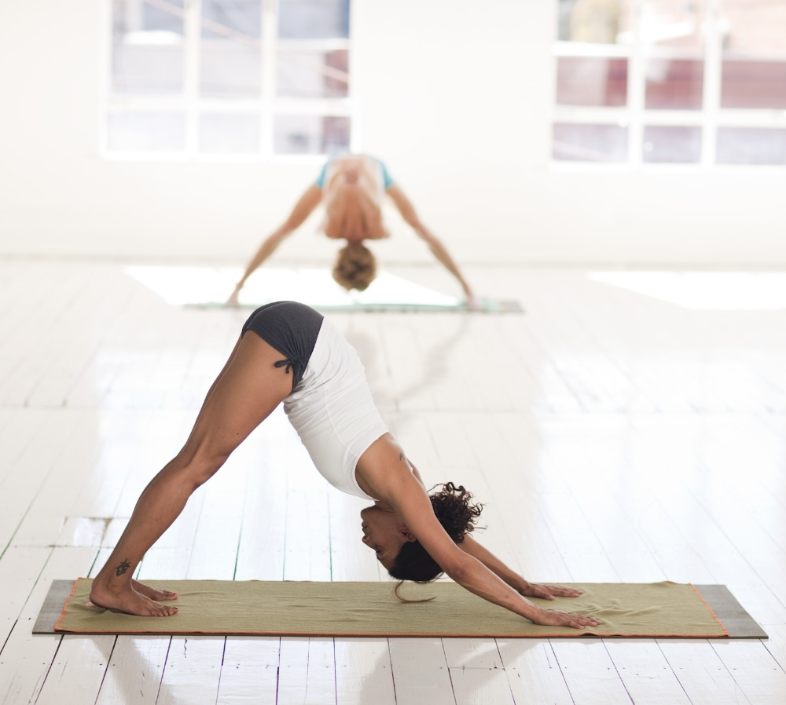
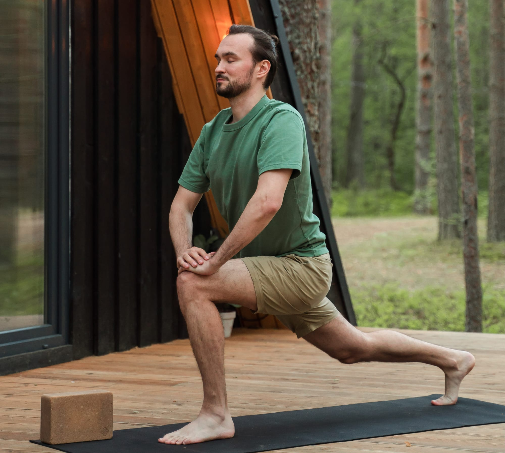

Yoga class for all levels.
Yoga and Meditation to reduces stress and calm your nerves.
Yoga is a great form of exercise for people of all ages and physical abilities. Start your journey to a healthy and happy lifestyle by signing up for our free one month Yoga With Me class. The world is full of stress and with regular yoga practicess one can create a mental clarity and calmness which will increases their body awareness relieves stress and make mind feel relaxed.
I like to inspire others to a healthy and fun way to take good care of their body, soul and mind. The good feeling that I get and the result I get from Yoga practices I am sure there are are plenty of people who would like to feel same way.
Join the memberships club and take advantage of the free one month online class and enjoy the different yoga sections we have which includes stretching, downward facing, bridge pose, seated halfway-spinal twist, meditation and many more. Get down on the mat and stretch your muscles and find your way back to peace of mind. Click Here to sign up for a free trial.
Best yoga pose for back pain.
Downward pose for muscles.
The benefit of yoga doesn't end in excercising yourself only physically, but you also benefit mentalilly as it helps
reduces stress. Yoga can lower blood pressure and reduce insomnia related sickness.
Yoga also do away with depression and for those that might have difficulties in sleeping this is a welcome practice for
them. This entirely depends on your goals and expectations. If your goal is to build strength, flexibility, balance as well as
posture, yoga is the right choice for you.
Yoga practice for body pain

Counseling is not the only technique therapies used for couples in rocky stages. Couples therapy techniques now include partner yoga as an intervention. Many find it useful and effective in restoring intimacy and romance. Practicing yoga with a partner or friend can be a fun way to strengthen your relationship. One of the most common couples yoga benefits is to manage mental health. As each yoga pose brings inner peace, concentration, and connection with ones body, it also relieves tension and discomfort.